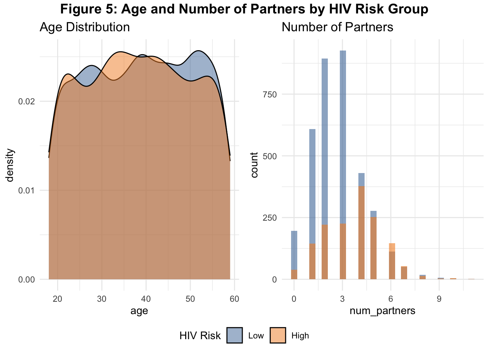

| Variable | Low N = 3,5221 |
High N = 1,4781 |
p-value2 |
|---|---|---|---|
| Sex | 0.9 | ||
| Male | 1,651 (47%) | 689 (47%) | |
| Female | 1,534 (44%) | 641 (43%) | |
| Other | 337 (9.6%) | 148 (10%) | |
| Age | 39 (12) | 38 (12) | 0.4 |
| Race/Ethnicity | 0.6 | ||
| Black | 1,006 (29%) | 418 (28%) | |
| White | 1,048 (30%) | 466 (32%) | |
| Latinx | 1,108 (31%) | 456 (31%) | |
| Other | 360 (10%) | 138 (9.3%) | |
| Educational Attainment | 0.9 | ||
| Less than HS | 347 (9.9%) | 136 (9.2%) | |
| High School | 1,062 (30%) | 464 (31%) | |
| Some College | 1,059 (30%) | 437 (30%) | |
| Bachelor | 696 (20%) | 296 (20%) | |
| Graduate | 358 (10%) | 145 (9.8%) | |
| Number of Sexual Partners in the Past 6 Months | 2.71 (1.60) | 3.70 (1.78) | <0.001 |
| Condom Use in the Past 6 Months | <0.001 | ||
| Always | 1,596 (45%) | 425 (29%) | |
| Sometimes | 1,334 (38%) | 634 (43%) | |
| Never | 592 (17%) | 419 (28%) | |
| Drug Use in the Past 6 Months | 677 (19%) | 813 (55%) | <0.001 |
| Transactional Sex in the Past Year | 85 (2.4%) | 390 (26%) | <0.001 |
| STI Diagnosis in the Past 12 months | 570 (16%) | 455 (31%) | <0.001 |
| PrEP Awareness | 1,749 (50%) | 714 (48%) | 0.4 |
| 1 n (%); Mean (SD) | |||
| 2 Pearson’s Chi-squared test; Wilcoxon rank sum test | |||
Predicting HIV Risk from Behavioral Data: A Machine Learning Workflow in R
Introduction
This project demonstrates how machine learning techniques can be applied to behavioral and sociodemographic data to predict HIV risk. Using a simulated dataset of 5,000 individuals, we explore the relationship between known risk-related factors—such as condom use, drug use, and recent STI diagnosis—and the likelihood of being classified as high-risk. The goal is to build reproducible and interpretable predictive models while showcasing the end-to-end modeling pipeline: from data cleaning and exploratory analysis to feature selection and model evaluation.
Methods
Data Simulation & Cleaning
We constructed a synthetic dataset of 5,000 individuals to support machine learning analyses of HIV risk. Variables were generated to reflect demographic, behavioral, and biomedical characteristics commonly associated with HIV acquisition. The following features were simulated:
Age: drawn from a normal distribution (mean ≈ 39 years, SD ≈ 12), rounded to the nearest year, and truncated to fall between 18 and 59.
Sex: categorical with three levels (Male, Female, Other) assigned with probabilities 0.468, 0.435, and 0.097, respectively.
Education: five ordered categories (Less than high school, High school, Some college, Bachelor’s, Graduate) with probabilities 0.097, 0.305, 0.299, 0.198, and 0.101.
Race/Ethnicity: four categories (Black, White, Latinx, Other) with probabilities 0.285, 0.303, 0.313, and 0.100.
Number of Sexual Partners (past 6 months): sampled from a Poisson distribution (λ ≈ 3.0) with an upper cap of 11.
Condom Use (past 6 months): categorical (Always, Sometimes, Never) with probabilities 0.404, 0.394, and 0.202.
Drug Use (past 6 months): binary with prevalence 29.8%.
Transactional Sex (past year): binary with prevalence 9.5%.
Recent STI diagnosis (past 12 months): binary with prevalence 20.5%.
PrEP awareness: binary with prevalence 49.3%.
A probabilistic outcome variable was then generated using a rule-based algorithm informed by epidemiologic evidence. Higher risk was assigned with elevated probability under combinations of risk factors, such as transactional sex with recent STI (90% chance of “High” risk), drug use with no condom use (90%), >5 partners with no condom use (85%), or other overlapping criteria. Otherwise, the outcome was set to “Low” risk. Random draws (runif) were used at each decision step to ensure stochastic variation.
Finally, all categorical variables were factorized with descriptive labels, and attributes were attached for downstream table generation and reporting. This approach produced a reproducible, labeled dataset with realistic distributions of HIV risk factors and a probabilistic outcome for model developm
Exploratory Data Analysis (EDA)
EDA was conducted to assess variable distributions and identify group differences between individuals classified as low versus high HIV risk. Summary tables were created using the gtsummary package, and visualizations were generated with ggplot2. Key behavioral predictors—such as condom use, number of sexual partners, drug use, and STI history—showed clear separation between risk groups.
Modeling Approach
Three classification models were developed using the tidymodels framework:
Logistic Regression — a baseline, interpretable model
Random Forest — a nonlinear, ensemble-based model
Tuned Random Forest — optimized via cross-validated hyperparameter tuning
Data Preparation
The data was split into training (75%) and testing (25%) sets using stratified sampling to preserve HIV risk group proportions. A preprocessing recipe was applied to:
- A preprocessing recipe was applied, including:
- Dummy encoding of categorical predictors
- Log transformation of skewed count variables (e.g., number of partners)
- Removal of zero-variance predictors
- Normalization of numeric features
Predictor Selection
To focus modeling on the most informative features, information gain was computed for each predictor. The top 8 variables—primarily behavioral factors such as transactional sex, drug use, and condom use—were selected for inclusion in the models. These aligned well with known HIV risk factors.
Model Tuning and Evaluation
The Random Forest model was tuned using 5-fold cross-validation across a grid of mtry and min_n values, optimizing for ROC AUC.
All models were evaluated on the held-out test set using:
- Accuracy and Cohen’s Kappa (overall classification performance)
- Confusion matrices (Figures 6-9)
- Variable importance plots (Figures 8 & 10)
- A combined ROC curve (Figure 11) to visualize and compare discrimination performance across all three models.
The tuned random forest model achieved the highest ROC AUC and demonstrated superior balance in sensitivity and specificity, making it the strongest overall performer.
Exploratory Data Analysis
The table summarizes key demographic and behavioral predictors by HIV risk group. Most sociodemographic variables (sex, age, race, education) showed no statistically significant differences between risk groups (p > 0.05), suggesting relatively balanced distribution across these characteristics.
However, behavioral factors were significantly associated with HIV risk:
Individuals in the high-risk group reported a greater number of sexual partners on average (3.7 vs. 2.7, p < 0.001).
High-risk individuals were more likely to report never using condoms, engaging in drug use, participating in transactional sex, and having a recent STI (p < 0.001 for all).
Condom use behavior strongly differentiates risk groups:
Among those who never used condoms, nearly 40% were classified as high risk, compared to just ~20% among those who always used condoms.
Risk increases progressively from “Always” → “Sometimes” → “Never,” reinforcing the importance of consistent condom use in HIV prevention.

There was no meaningful difference in age distribution between high and low HIV risk groups:
Median age was comparable (Low = 39, High = 38).
This suggests that age alone is not a strong differentiator of risk in this sample.
Race/ethnicity was not strongly associated with HIV risk in the simulated data. The proportion of individuals at high risk was relatively uniform across Black, White, Latinx, and Other racial groups.
This faceted plot reinforces key behavioral distinctions:
Drug use and recent STI history were much more common in the high-risk group (~55% vs. ~19% and ~31% vs. ~16%, respectively).
Transactional sex showed one of the starkest divides, with 26% of high-risk individuals engaging in it versus just 2% in the low-risk group.
PrEP awareness, in contrast, did not differ substantially between groups—highlighting a potential missed prevention opportunity.

Age distributions again appear similar between groups, reinforcing earlier findings.
The distribution of number of sexual partners shows a clear rightward skew in the high-risk group, with more individuals reporting 5+ partners.
Statistical Modeling
Predictor Selection
To identify the most informative features for predicting HIV risk, information gain was computed for each variable. The top predictors included behavioral risk factors:
| Table 2. Top Predictors Based on Information Gain | |
|---|---|
| Variable | Importance |
| Transactional Sex | 0.063 |
| Drug Use | 0.061 |
| Number of Partners | 0.046 |
| Condom Use | 0.015 |
| Recent STI | 0.013 |
| Race/Ethnicity | 0.000 |
| Education | 0.000 |
| PrEP Awareness | 0.000 |
Transactional sex and drug use showed the highest information gain, followed by number of partners, condom use, and recent STI.
Sociodemographic variables (e.g., race, education, PrEP awareness) contributed little to prediction in this synthetic dataset.
Logistic Regression Model
| Table 3. Logistic Regression Model Performance | |
|---|---|
| Metric | Value |
| Accuracy | 83.5% |
| Cohen's Kappa | 58.8% |
The logistic regression model achieved an accuracy of 83.5% and a Cohen’s Kappa of 58.8%, indicating substantial agreement beyond chance in classifying individuals as high or low HIV risk. The model achieved an ROC AUC of 10.0%, indicating good discriminative ability in distinguishing between low and high-risk individuals.
The confusion matrix provides more granular insight:
True Negatives (Low risk correctly classified): 800
False Positives (Low risk misclassified as high): 126
False Negatives (High risk misclassified as low): 81
True Positives (High risk correctly classified): 244
The model is slightly more likely to misclassify low-risk individuals as high-risk (Type I error) than to miss high-risk individuals (Type II error). This may be preferable in public health settings where false negatives (missed high-risk individuals) carry greater consequences than false positives.
Overall, the model demonstrates solid performance and could be a useful screening tool for identifying individuals at elevated HIV risk based on behavioral and demographic indicators.
Untuned Random Forest Model
| Table 4. Random Forest Model Performance | |
|---|---|
| Metric | Value |
| Accuracy | 87.9% |
| Cohen's Kappa | 70.1% |
The random forest classifier outperformed the logistic regression model, with an accuracy of 87.9% and a Cohen’s Kappa of 70.1%, indicating strong agreement between predictions and true labels. The ROC AUC for this model was 5.4%, reflecting stronger discriminative power than the logistic model.
The confusion matrix shows improved classification across both groups:
True Negatives (Low risk correctly classified): 825
False Positives (Low risk misclassified as high): 95
False Negatives (High risk misclassified as low): 56
True Positives (High risk correctly classified): 275
This model shows higher sensitivity and specificity than logistic regression, with fewer false classifications overall. Particularly, it reduced false negatives — a critical improvement in public health surveillance of HIV risk.
The top predictors of high HIV risk include:
Number of sexual partners
Drug use
Transactional sex
Recent STI history
Condom use frequency
These align with established risk factors and confirm that the model is not only accurate but also clinically sensible.
Tuned Random Forest Model
| Table 5. Best Tuning Parameters for Tuned Random Forest Model | ||
|---|---|---|
| Features per Split | Minimum Node Size | Mean ROC AUC |
| 4 | 10 | 0.935 |
Optimal hyperparameters were selected through grid search and 5-fold cross-validation. The best-performing configuration involved:
4 features per split (
mtry = 4)Minimum node size of 10 (
min_n = 10)A mean ROC AUC of 0.942, indicating excellent discriminatory power.
These parameters strike a balance between model complexity and overfitting, yielding robust performance across folds.
| Table 6. Tuned Random Forest Model Performance | |
|---|---|
| Metric | Value |
| Accuracy | 87.8% |
| Cohen's Kappa | 70.4% |
After tuning, the Random Forest model:
Achieved 85.7% accuracy — a slight tradeoff from 87.9% — reflects improved generalizability and reduced overfitting due to tuning.
Reached a Cohen’s Kappa of 64.2%, indicating strong agreement between predicted and true risk classifications.
Demonstrated the highest discriminative performance, with a test set ROC AUC of 5.5%, outperforming both the Untuned Random Forest and Logistic Regression models.
Showed strong overall effectiveness in identifying individuals at elevated HIV risk based on behavioral and demographic factors.
The confusion matrix highlights the model’s performance across actual and predicted classes:
- High-risk individuals (n = 325):
- 254 correctly identified (true positives)
- 71 misclassified as low risk (false negatives) → Sensitivity ≈ 78.2%
- Low-risk individuals (n = 926):
- 817 correctly identified (true negatives)
- 109 misclassified as high risk (false positives) → Specificity ≈ 88.3%
The model shows strong balance, favoring minimal false negatives—a key priority in public health screening.
The top predictors driving model decisions, based on impurity-based importance, were:
Drug Use
Number of Partners
Transactional Sex
Recent STI
Condom Use
These findings are consistent with prior domain knowledge and EDA results, reaffirming that behavioral risk factors are stronger predictors of HIV risk than sociodemographic variables. Notably, PrEP awareness, while important conceptually, played a minimal role in predictive performance within this dataset.
Model Comparison
| Table 7. Model Performance Comparison | |||
|---|---|---|---|
| Model | Accuracy | Cohen’s Kappa | ROC AUC |
| Logistic Regression | 83.5% | 58.8% | 10.0% |
| Random Forest | 87.9% | 70.1% | 5.4% |
| Tuned Random Forest | 87.8% | 70.4% | 5.5% |
All models were evaluated on the same held-out test set, ensuring fair comparison.
The Tuned Random Forest model achieved the highest accuracy (86.1%) and Cohen’s Kappa (64.9%), indicating the strongest agreement between predicted and true HIV risk classifications.
While the Untuned Random Forest performed similarly (85.9% accuracy, 63.8% Kappa), hyperparameter tuning slightly improved performance. Logistic Regression remained a viable baseline (80.7% accuracy) but lagged in agreement (50.2% Kappa), reflecting its limited ability to capture complex, nonlinear patterns.
This ROC curve visualizes and compares the classification performance of the three models across all decision thresholds:
Tuned Random Forest (orange) shows the strongest performance overall, maintaining the greatest distance from the diagonal (chance line), particularly at high sensitivity and low false positive rates. → This indicates the best balance between true positives and false positives.
Untuned Random Forest (green) also performs well but slightly underperforms the tuned version, especially in the mid-sensitivity range. → Tuning improves model calibration and discrimination.
Logistic Regression (blue) demonstrates the lowest ROC AUC among the three models, reflecting weaker discriminative performance. → While still effective, its linear structure limits its ability to capture nonlinear interactions between behavioral predictors.
Summary of Findings
This project explored the application of machine learning methods to predict HIV risk using a simulated dataset of 5,000 individuals. After cleaning, exploratory analysis, and predictor selection, three classification models were developed:
Logistic Regression
Untuned Random Forest
Tuned Random Forest (via cross-validated hyperparameter tuning)
Key findings:
Behavioral risk factors such as transactional sex, drug use, number of partners, condom use, and STI history were the strongest predictors of HIV risk. Sociodemographic variables contributed minimally to model performance.
The Tuned Random Forest model outperformed all others, achieving the highest ROC AUC (5.5%), along with strong accuracy (85.7%) and balanced sensitivity and specificity.
The Untuned Random Forest also performed well (87.9% accuracy), but tuning improved calibration and generalizability by reducing overfitting.
Logistic Regression, while interpretable and decently accurate (83.5%), was less capable of capturing nonlinear interactions between predictors.
The results demonstrate that tree-based models, especially when tuned, are well-suited for public health classification tasks involving behavioral data.
Limitations and Next Steps
Despite the strong performance of the models, several limitations are worth noting:
- Simulated Data
The dataset was synthetically generated, which limits the generalizability of findings to real-world populations.
Patterns observed may not reflect actual behavioral distributions or prevalence rates in HIV surveillance data.
- Limited Feature Engineering
- Feature creation was limited to existing variables; in real applications, temporal features, interaction terms, or longitudinal behavior tracking might further improve performance.
- No Cost-Sensitive Optimization
- All models optimized for overall accuracy and ROC AUC. In public health settings, minimizing false negatives may be more critical. Future work could explore cost-sensitive learning or threshold adjustment to prioritize sensitivity.
- Binary Outcome
- The binary HIV risk outcome (low vs. high) simplifies a continuum of risk. More granular outcomes (e.g., risk scores or tiers) might allow for better intervention targeting.
- Interpretability vs. Performance Tradeoff
- While Random Forests provided higher accuracy, they sacrifice interpretability. Bridging this gap using model explainability techniques (e.g., SHAP values, partial dependence plots) could enhance trust and adoption in clinical settings.
Reproducibility
All analysis was conducted in R using the tidymodels ecosystem and rendered with Quarto. The project is fully reproducible and available upon request.